CS 180 · Project 3 · Fall 2026
Fun with
Flow Models
izatr2004.github.io/project-website/proj3/
From pretrained image models to a flow-matching UNet trained on handwritten digits.
A1.1: Constructing noisy training inputs
A fixed Gaussian tensor is mixed with the building photograph using x(t) = (1-t) noise + t image. Increasing t increases the image contribution. The saved floating-point image/noise pair is reused throughout A1.1-A1.5.
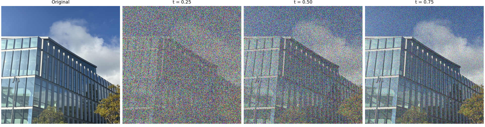
The building's window grid becomes easier to see as t increases. At t=0.25, noise dominates much of the texture; at t=0.75, the structure remains recognizable beneath the noise.
A1.2: Gaussian denoising
The baseline divides each noisy state by t, then applies a Gaussian filter. Sigma is selected from 1, 2, 4, and 8 by the unclipped MSE against the known original. This provides a reproducible best-of-four baseline; it uses ground truth to choose sigma.
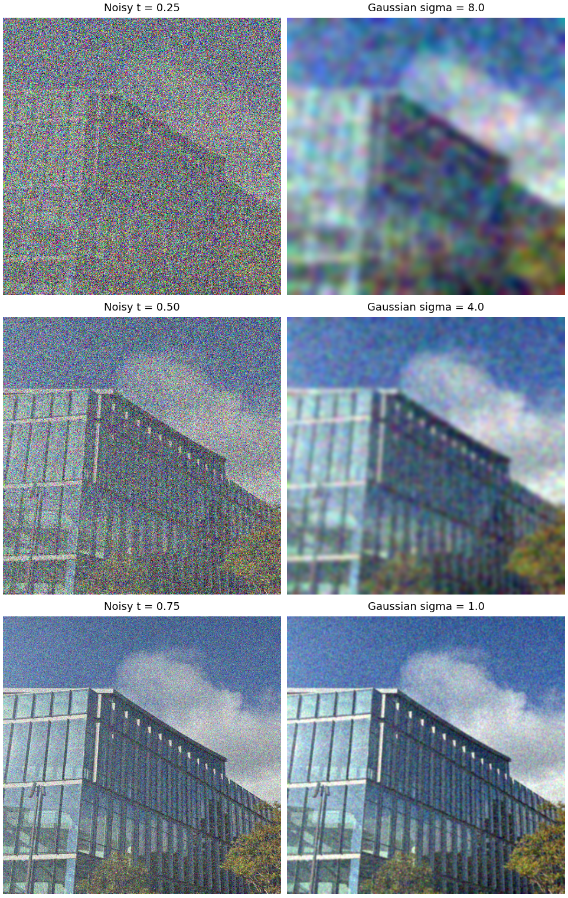
The Gaussian baseline reduces the noise while softening the window edges and foliage. The numerical sigma selection and unclipped reconstruction errors are listed below.
A1.3: One-step denoising
A single velocity prediction gives x_hat(1) = x(t) + (1-t) v(x(t),t). Each row uses the same original photograph and the same saved noisy tensor. The text condition is 'a high quality photo'.
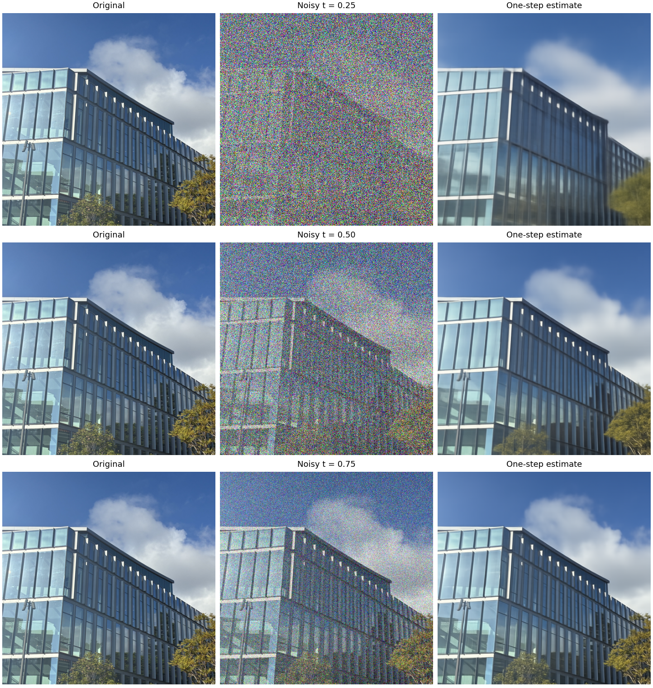
The one-step estimate recovers the building's overall geometry even at t=0.25, where little structure is visible in the noisy display. At this low time the windows, trees, and clouds are softened or simplified. At t=0.75 more of the original reflections and structural detail survive. A plausible denoised image can therefore differ from the exact photograph even when it looks clean.
A1.4: Visualizing velocity
The predicted update is (1-t)v. The exact paired-path update is (1-t)(image-noise). Both signed RGB updates share a symmetric scale centered at middle gray. The heatmap measures the RGB root-mean-square update error before clipping, using one linear color scale for all three times. The original reference appears once above the three time comparisons.
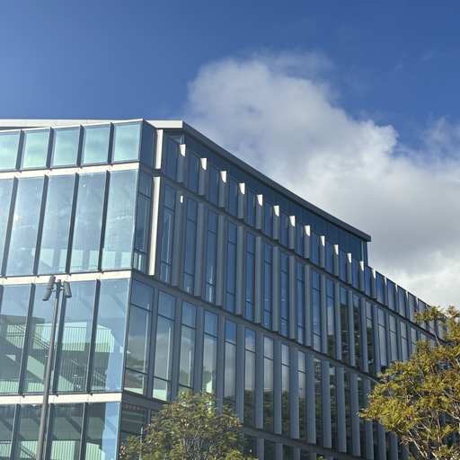
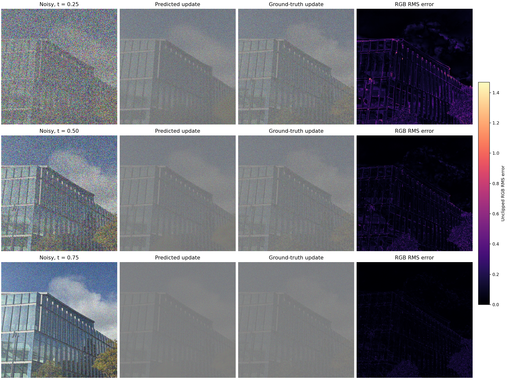
Most update error lies around the roofline, window boundaries, tree branches, and cloud edges rather than smooth sky. The t=0.25 row has the strongest structured error; it becomes weaker at t=0.50 and t=0.75 on the same heatmap scale. The predicted and exact signed updates both contain strong noise-canceling components, so their overall textures look similar. Their edge differences explain the softened or shifted details in the one-step reconstructions.
A1.5: Euler sampling
From the saved t=0.50 input, 25 steps of size 0.02 reach t=1. Each step recomputes the velocity at the current state. The trajectory shows the initial state, every fifth update, and the endpoint. The final comparison shares the identical noisy input across all three methods.
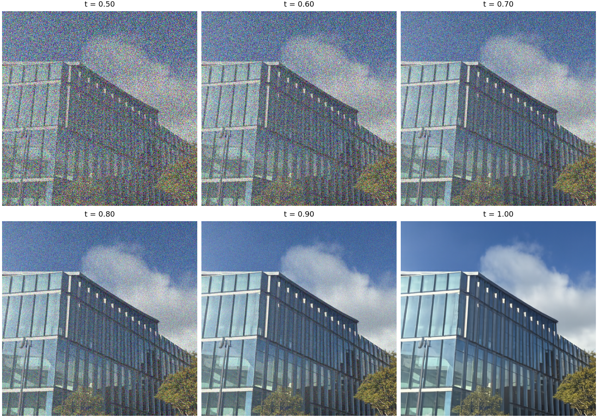
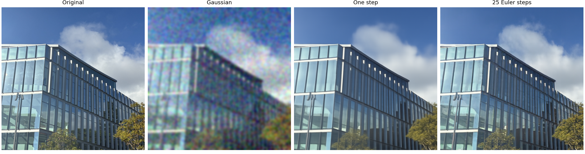
Noise fades progressively along the recomputed Euler trajectory, with substantial fine noise still visible at t=0.90 before the clean endpoint. The 25-step result restores finer cloud structure, window reflections, and foliage than the one-step estimate, while Gaussian blur leaves colored noise and soft boundaries. The Euler result is closer in appearance to the original here, although its fine details are still model predictions rather than guaranteed recovery of every original pixel. At t=0.50, the unclipped MSEs are 0.030566 for Gaussian blur, 0.007892 for one step, and 0.009342 for Euler. Thus the sharper-looking Euler sample has a slightly higher pixel error than the smoother one-step estimate; visual detail and exact pixel agreement are different criteria.
Reconstruction measurements
MSE is measured in the original [-1,1] floating-point image range before display clipping.
| Experiment | Method | MSE |
|---|---|---|
| Gaussian at t=0.25 | sigma 8.0 | 0.050958 |
| Gaussian at t=0.5 | sigma 4.0 | 0.030566 |
| Gaussian at t=0.75 | sigma 1.0 | 0.014471 |
| t=0.50 reconstruction | Gaussian blur | 0.030566 |
| t=0.50 reconstruction | One-step estimate | 0.007892 |
| t=0.50 reconstruction | 25 Euler steps | 0.009342 |
A1.6: Generating images from noise
Five independent initial noises use seeds 180-184. Fifty Euler updates generate each image using the generic photo prompt. These are ordinary conditional predictions, with no additional guidance.
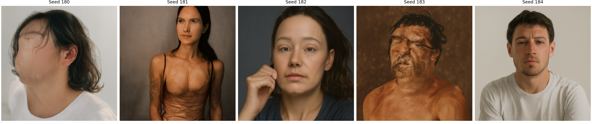
All five generic-prompt samples are portraits, even though the prompt does not name a person. Seeds produce different faces, poses, and backgrounds, but the sample set is not diverse in subject category. Several images have obvious defects: seed 180 has missing facial features, seed 181 has inconsistent face/body structure, and seed 183 has a painterly texture. Starting from noise can generate a plausible scene, but ordinary conditional sampling is unreliable in this small set.
A2.1: Classifier-free guidance
The guided field is v_cond + 7(v_cond-v_empty). Every conditional/unconditional pair shares its image and time. The first and second rows reuse the exact same five initial noises, isolating the effect of guidance.
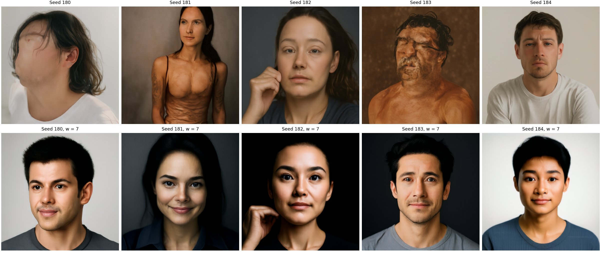
Guidance makes all five paired outputs more coherent as photographic portraits. The incomplete face in seed 180 becomes a full face, and the mixed textures in seed 183 become a much cleaner head-and-shoulders portrait. The guided images also have stronger contrast and smoother skin. Some eyes and facial proportions remain stylized, so stronger guidance improves this set without guaranteeing realism. Both rows still contain only portraits, showing limited subject diversity under the generic prompt.
A3.1: Editing the Campanile
For each starting time, interpolate the input with the same fixed noise and integrate to t=1 using the generic photo prompt, h=0.02, and guidance w=7. Lower starting times retain less input information.
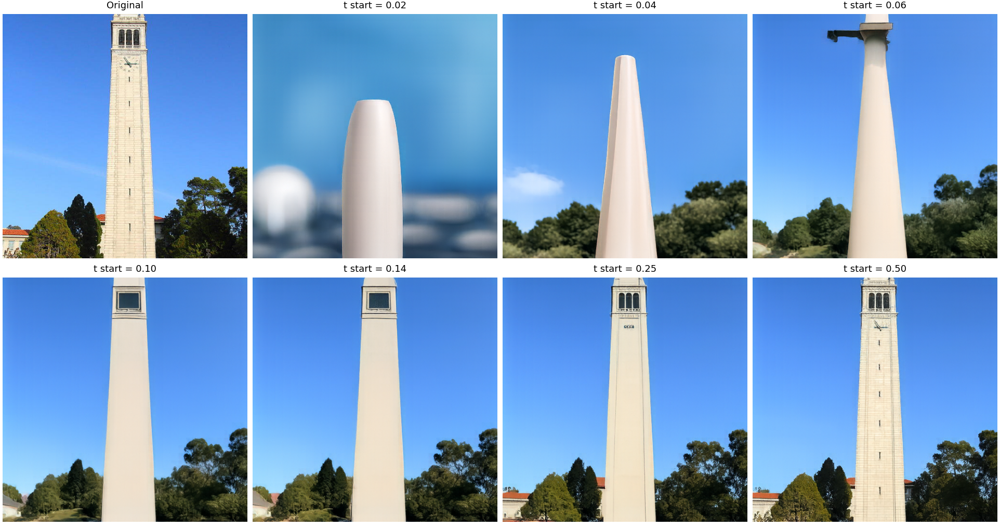
At t=0.02 the tower becomes a smooth pale cylinder, preserving mainly its vertical placement and blue surroundings. At t=0.04-0.06 it is still an invented column-like object. The square upper opening returns around t=0.10, the belfry arches return at t=0.25, and the clock face and brick texture are much closer to the original at t=0.50. Increasing the starting time preserves progressively more of the photograph, rather than simply sharpening the same generated object.
A3.1: Editing two personal photographs
The building and portrait are personal photographs reused from the earlier projects. Each sweep includes starting times 0.02, 0.04, 0.06, 0.10, 0.14, 0.25, and 0.50, with the same seed and generic prompt.
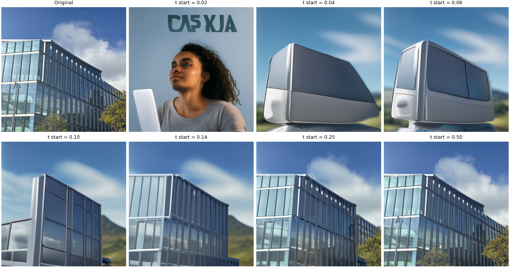
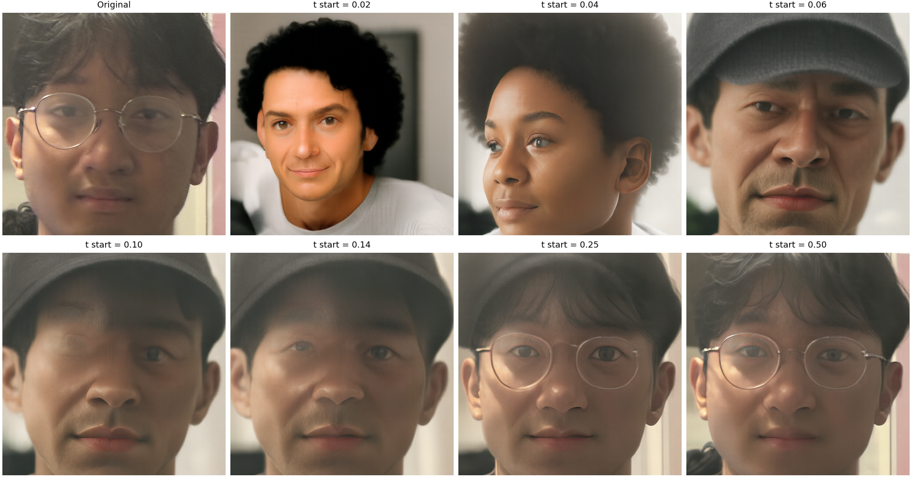
The building is replaced entirely by a portrait at t=0.02. At t=0.04-0.06, its broad blue and gray regions become a smooth box-like object; recognizable window framing returns around t=0.10-0.14, and t=0.50 is much closer to the original facade. The portrait likewise changes into different people at low times. At t=0.06-0.14 the sampler invents a cap and omits the glasses. Glasses return at t=0.25, with the original hair and framing much better preserved at t=0.50. A generic photo prompt does not preserve a particular identity when most of the input has been replaced by noise.
A3.1: Editing a web image
The web input is the tiger image used in Project 2 (Amandaines, CC BY-SA 3.0). It uses the same seven starting times, generic prompt, and guided sampling procedure.
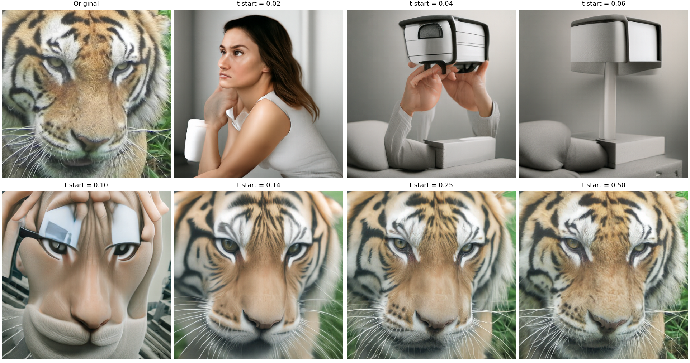
The tiger is lost at t=0.02, which produces a portrait. The t=0.04-0.06 outputs reinterpret its large light and dark regions as box-like objects. At t=0.10 the eye and muzzle arrangement returns as a smooth, mask-like face with invented hands. A recognizable tiger appears at t=0.14, while t=0.50 preserves much more of the original fur texture and whiskers. This sweep shows that retaining the rough layout is not enough to preserve the original subject at very noisy starting points.
A3.1: Editing two drawings
The two original digital sketches, a house and a flower, were created for this project using Pillow. Each is evaluated at the same seven starting times with the generic photo prompt. These simple drawings test the flow model on inputs with flat colors and sharp outlines.
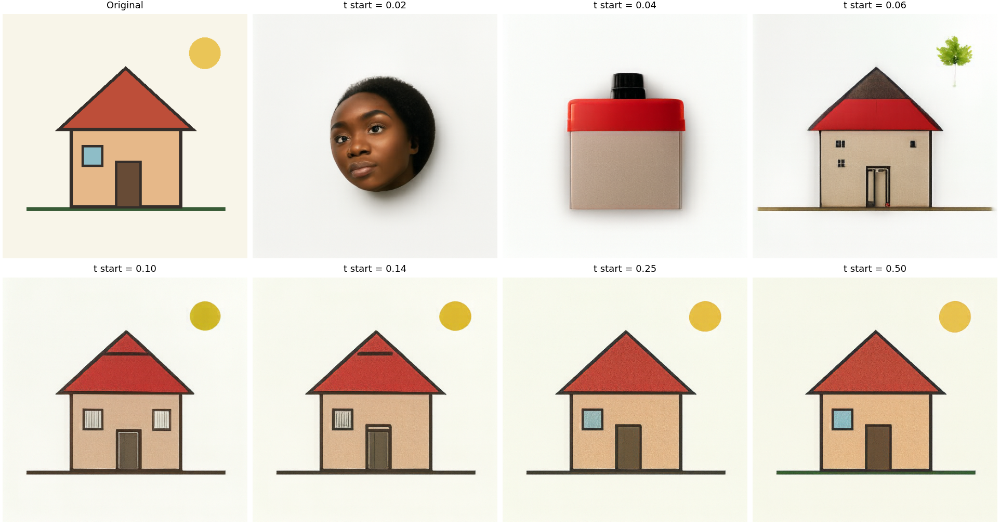
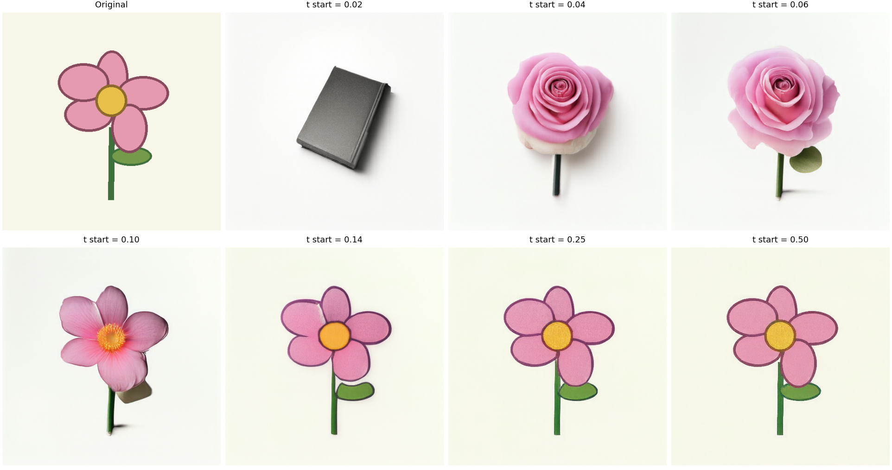
The house loses its identity at t=0.02 and becomes a bottle-like object at t=0.04. At t=0.06 it becomes a textured house, while t=0.10-0.14 adds extra windows and modifies the door. Higher starting times mostly preserve the flat drawing. The flower gives a stronger photographic transformation: t=0.04-0.06 produces a pink rose, and t=0.10 produces a more natural five-petal flower. By t=0.14-0.50, the outlined cartoon petals return. Intermediate starting times can therefore add natural-looking detail, while too much noise loses the subject and too little noise preserves the drawing style.
A3.2: Text-guided Campanile editing
Prompt: 'a photograph of a space rocket on a launch pad under a clear blue sky'. The seed, seven starting times, and sampling parameters match the generic-prompt sweep.
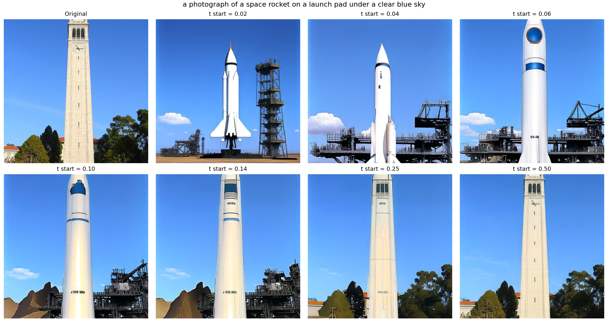
The rocket prompt produces recognizable launch vehicles and gantries at t=0.02-0.06, where the generic prompt produced smooth columns. Around t=0.10-0.14, the tower shape and rocket details mix: the central vertical silhouette remains, but blue panels, fins, and industrial structures are invented. At t=0.25 some Campanile arches return, and t=0.50 largely preserves the original tower despite the rocket prompt. Text has the most freedom when the starting image contributes less information.
A3.2: Text-guided personal-image editing
Building prompt: 'a photograph of a futuristic glass skyscraper with lush hanging gardens'. Portrait prompt: 'an oil painting of a young explorer wearing a spacesuit on Mars'. Only the text condition changes from the generic sweeps.
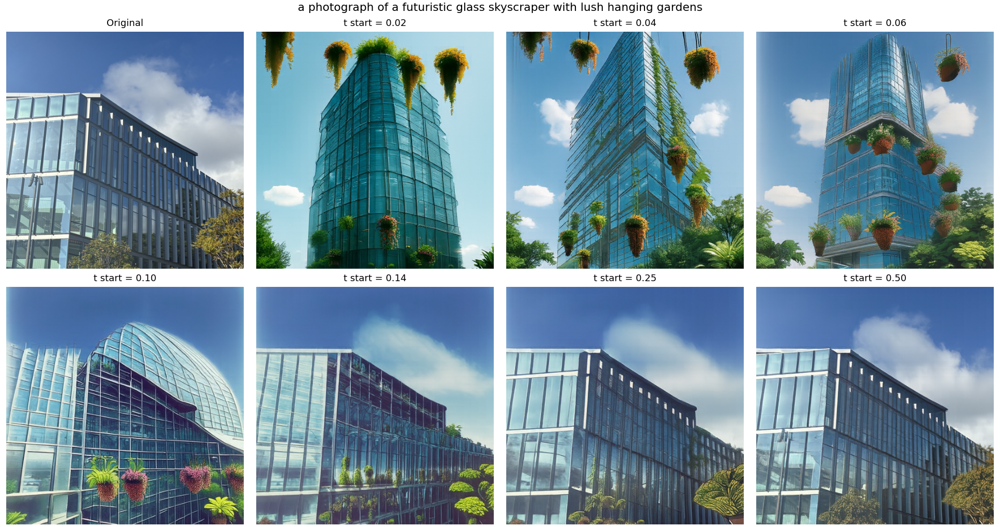
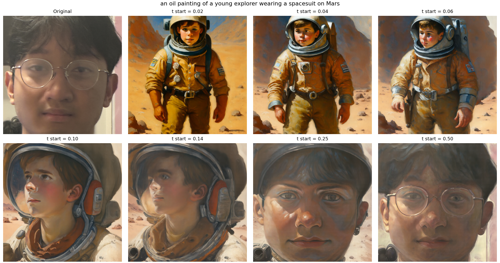
The building prompt changes the facade into tall or curved glass structures and adds hanging planters at t=0.02-0.10. Some planters float implausibly, so following the requested objects does not guarantee believable architecture. By t=0.25-0.50 the original facade dominates and the garden changes are weaker. The portrait prompt produces a young suited explorer on a rocky orange landscape at t=0.02-0.06, with a new face and composition. At t=0.10-0.14 it keeps a head-and-shoulders view and helmet; at t=0.25-0.50 the original face and glasses return while the oil-painting texture remains. Text can change both subject and style, with preservation controlled by the starting time.
A3.3: Visual anagrams
The sampler averages the guided upright velocity with a second guided prediction evaluated after a 180-degree rotation and then rotated back. Both spatial axes are flipped; the RGB and batch axes are preserved. The captions give both prompts.
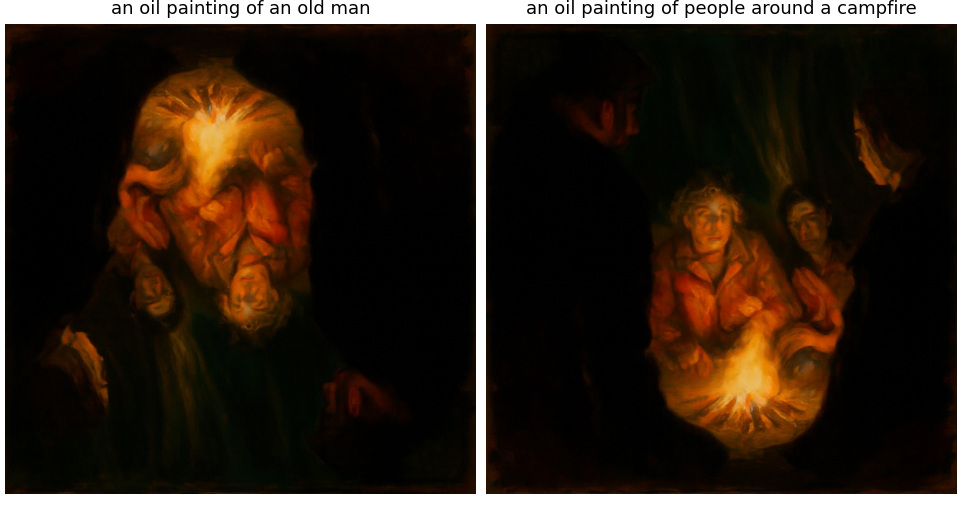
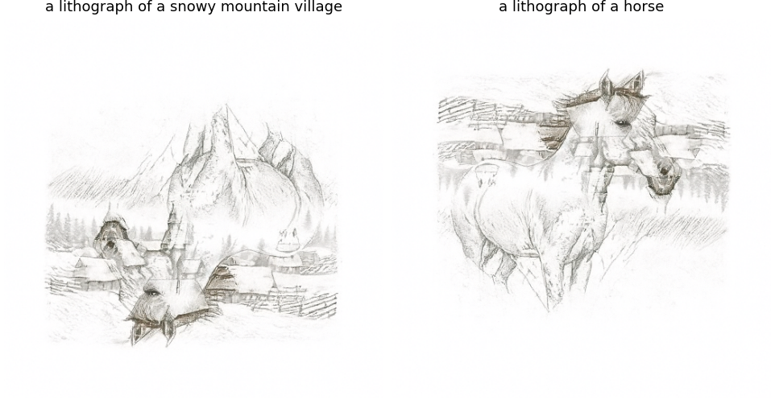
The first image reads as an orange-lit older man upright and as two people around a fire after a 180-degree rotation. The bright forehead becomes the flame, while the beard area contains the two figures. The second pair reads as a snowy mountain village upright and a horse after rotation; mountain peaks become downward leg-like forms, and buildings contribute to the head and body. The second image is much fainter, and traces of the horse face remain visible in the upright foreground. Both views share exactly the same pixels; the ambiguity is created during sampling rather than by blending two finished pictures.
A3.4: Hybrid images
Each update combines lowpass(v_distant) + v_close - lowpass(v_close). Twelve further prompt/seed/blur candidates were generated and visually reviewed. Both selected results use the recommended sigma 16 and kernel 265 at 512 x 512, with h=0.02 and guidance w=7. Captions give the exact prompts and seeds. The separable Gaussian uses reflection padding. Each reduced view uses the same final image; it is not a second generation.
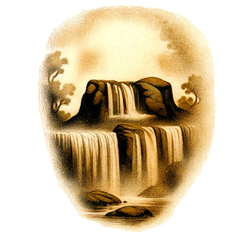
The same image reduced to 64 x 64 for the distant view.
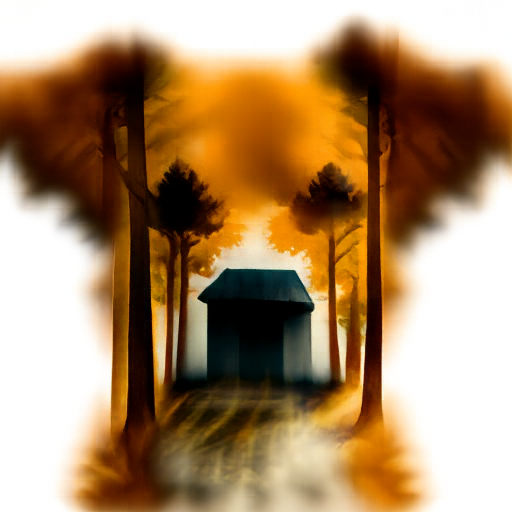
The same image reduced to 64 x 64 for the distant view.
Twelve additional prompt/seed/blur candidates were reviewed at full size and at 64 x 64. The selected skull/waterfall image keeps detailed streams and rock faces close up, while the rounded skull outline and dark facial bands become easier to read in the reduced view. The dog/forest result gives a stronger coarse face: broad brown ears and dark eye regions surround a detailed forest scene, and the model invents a cabin in the muzzle region. At reduced size the dog face dominates; close up the tree trunks, cabin, and ground texture are clearer. Both subjects still overlap at both scales, so these are fused interpretations rather than perfect scene switches. Sigma 32 weakened the coarse skull and panda subjects in the paired comparisons; the final two use the recommended sigma 16. The failed cat/forest candidates and all earlier attempts are retained locally with their settings.
B1.1-B1.2: UNet and noisy digits
The UNet follows the course diagram: two downsampling stages (28 to 14 to 7), a pooled 1 x 1 bottleneck, transposed-convolution upsampling, and skip concatenations at all three resolutions. Conv blocks use batch normalization and GELU. This visualization uses additive noise x + sigma epsilon on a test digit in [0,1].
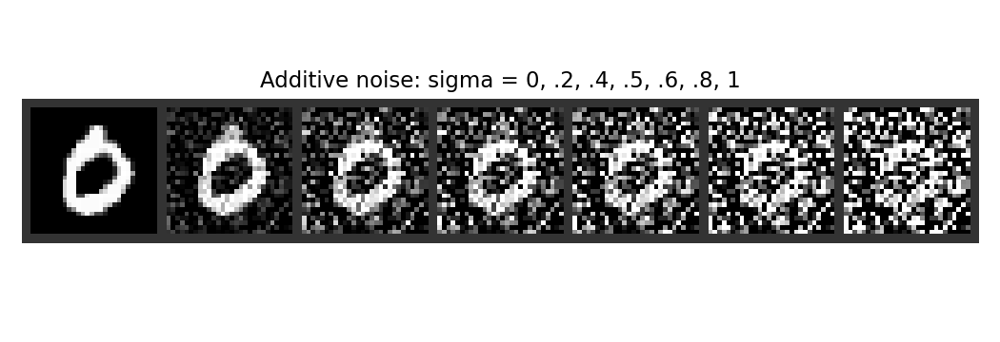
The zero is clear at low sigma, but its outline becomes progressively harder to distinguish from the background. At sigma 0.8 and 1.0, many background pixels are as bright as the digit after display clipping. The underlying noisy tensors are kept unclipped for training and inference.
B1.2.1: Training the denoiser
A D=128 UNet is trained for five epochs on all 60,000 MNIST training images with batch size 256 and Adam learning rate 1e-4. Fresh sigma=0.5 noise is drawn per batch. The held-out examples and their evaluation noise are fixed between epochs 1 and 5.
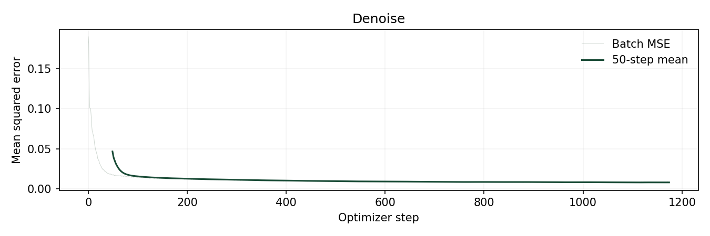
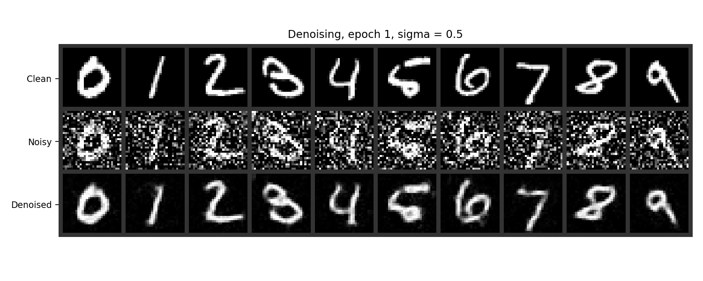
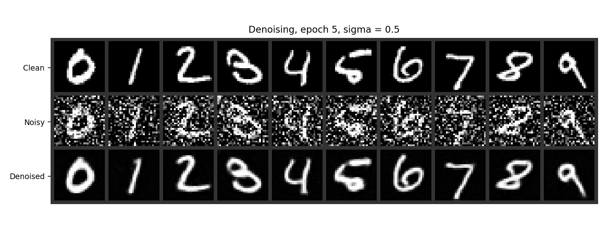
After one epoch the model already removes most background noise, but the reconstructed strokes are soft. By epoch 5 the 2, 4, and 7 have cleaner, more continuous outlines. The shape of the 8 still differs from its clean target, showing that denoising can change fine handwriting details. Training MSE decreases from 0.020798 to 0.008302; MSE on the ten displayed held-out examples decreases from 0.012907 to 0.009561. This is a small fixed illustration set, not a full-test-set score.
B1.2.2: Out-of-distribution testing
The model trained at sigma=0.5 is evaluated on the same test digit at sigma 0, 0.2, 0.4, 0.5, 0.6, 0.8, and 1.0. The noise tensor is fixed across the sweep so the noise scale is the only input change.
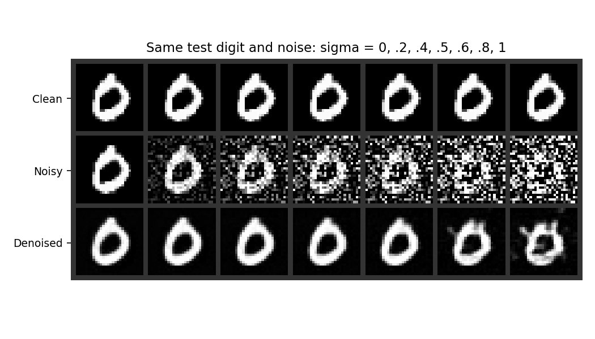
The model keeps the zero recognizable across this sweep, including inputs outside its training noise level. At sigma 0.8 and 1.0 the output develops extra bright fragments and a less even outline. At sigma 0 it also slightly smooths the already-clean input. Training at one noise level therefore gives some robustness, but it does not make the network an identity map on clean images or equally accurate at every noise level.
B1.2.3: Denoising pure noise
A fresh D=128 model is trained for five epochs with Gaussian inputs independent of the target digits. For squared error, the population optimum is E[image | noise] = E[image], because input and target are independent. A useful comparison is the actual training-set mean image alongside outputs from different noises.
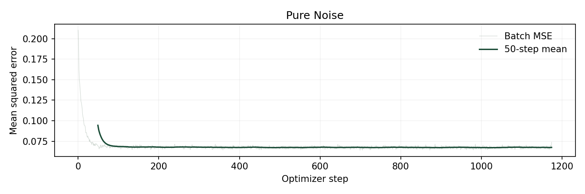
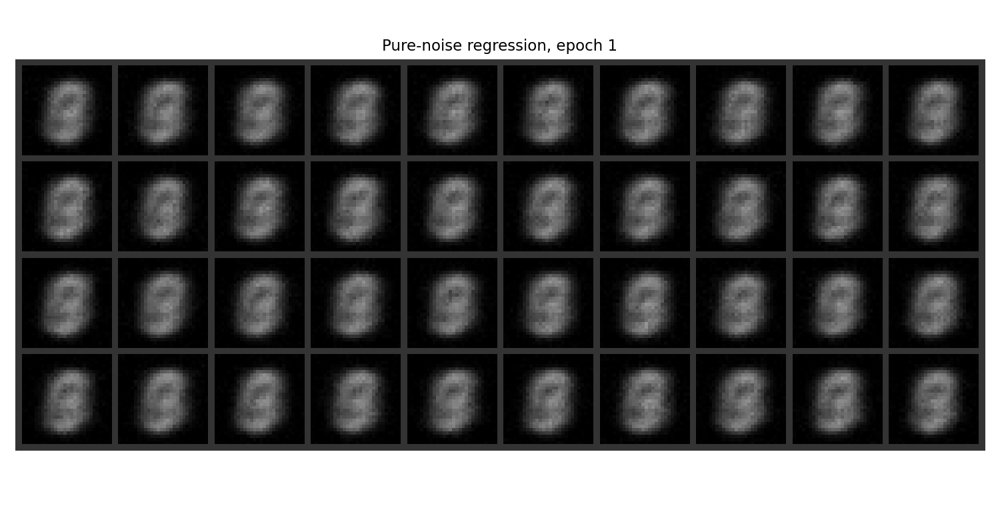
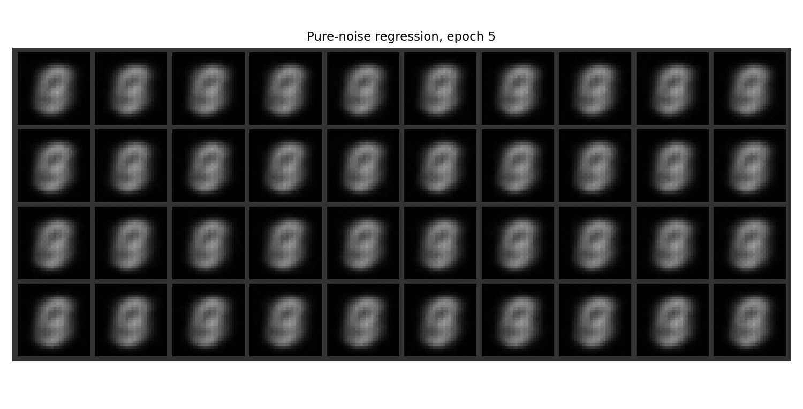
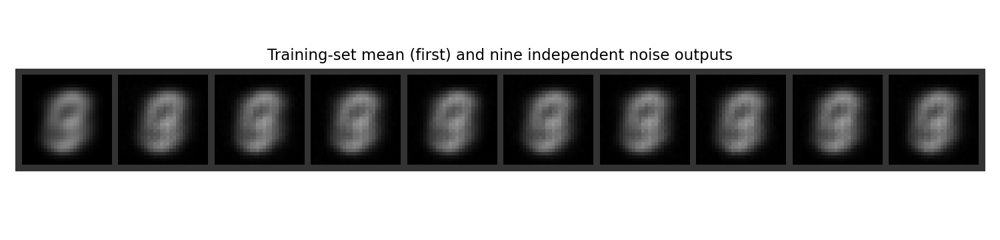
The nine independent noise inputs produce nearly the same blurry, centered shape. It resembles the empirical training mean shown at the left rather than nine separate handwritten digits. The training loss flattens near 0.0674, consistent with irreducible target variation when the input has no information about the chosen digit. Small output differences remain because this is a finite trained network, not the exact population optimum.
B2.1-B2.3: Time-conditioned flow matching
For each training image, draw fresh noise and continuous uniform time, then predict image-noise from (1-t)noise+t image. Two FC blocks embed t and multiplicatively modulate the decoder at 7 x 7 and 14 x 14. Training uses D=64, batch 64, Adam 1e-2, and ten epochs. The learning rate decays exponentially to one tenth of its initial value. Sampling uses 50 Euler steps and fixed initial noises.
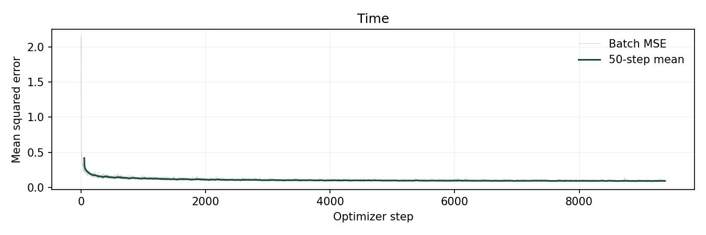
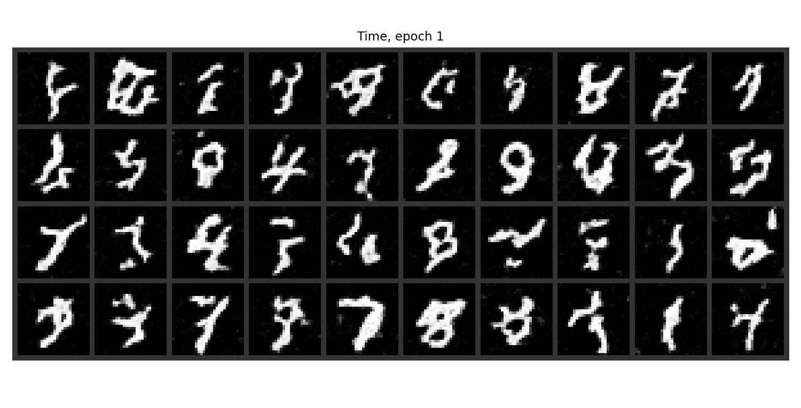
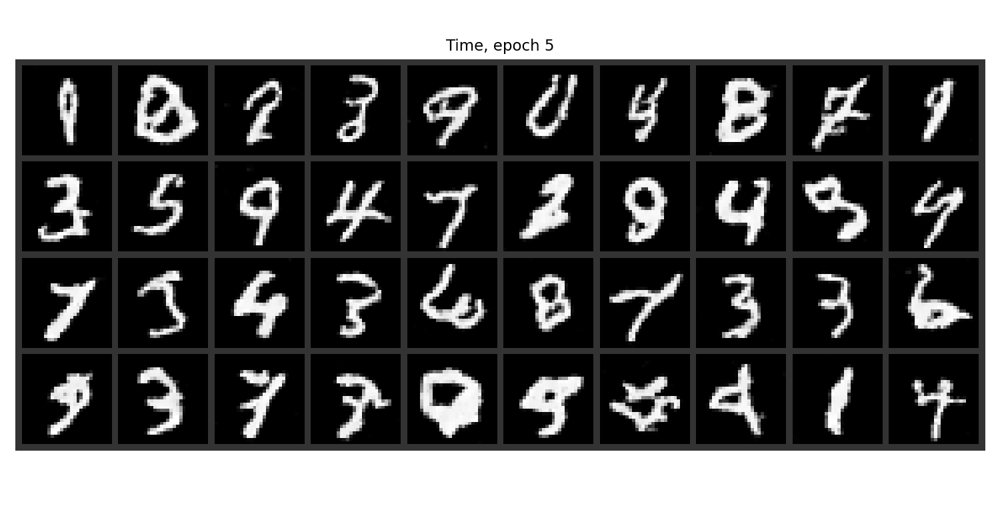
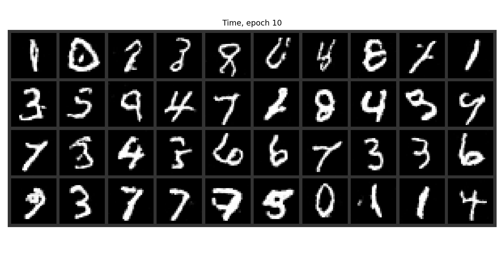
At epoch 1, many samples contain broken or overlapping strokes and some do not have a clear digit identity. With the same initial noises at epoch 10, most have cleaner strokes and recognizable forms, although a few remain ambiguous. The samples vary in class because this model receives time but no digit label. Training velocity MSE decreases from 0.165264 to 0.091349. A lower velocity loss supports the training trend; it is not itself a perceptual quality metric.
B2.4-B2.6: Class-conditioned flow matching
Two more FC blocks embed ten-dimensional one-hot class vectors. Class embeddings multiply decoder features and time embeddings are added. Independently for each training example, the class vector is zeroed with probability 0.1. Sampling uses v_empty + 5(v_class-v_empty), with 300 Euler steps. Each grid has columns 0-9 and four rows of independent samples, using identical seeds at epochs 1, 5, and 10.
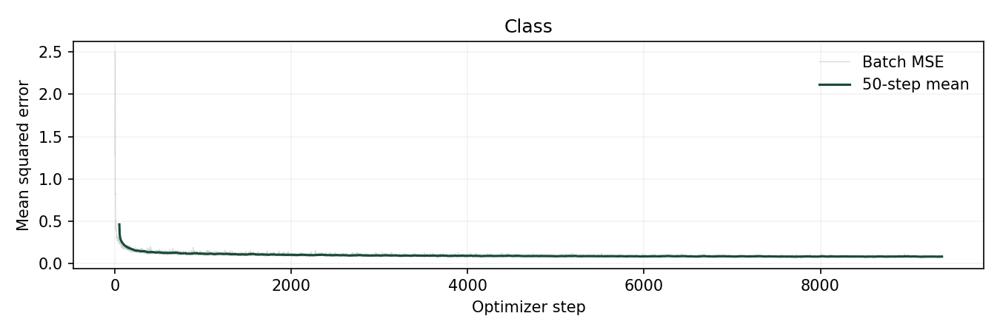
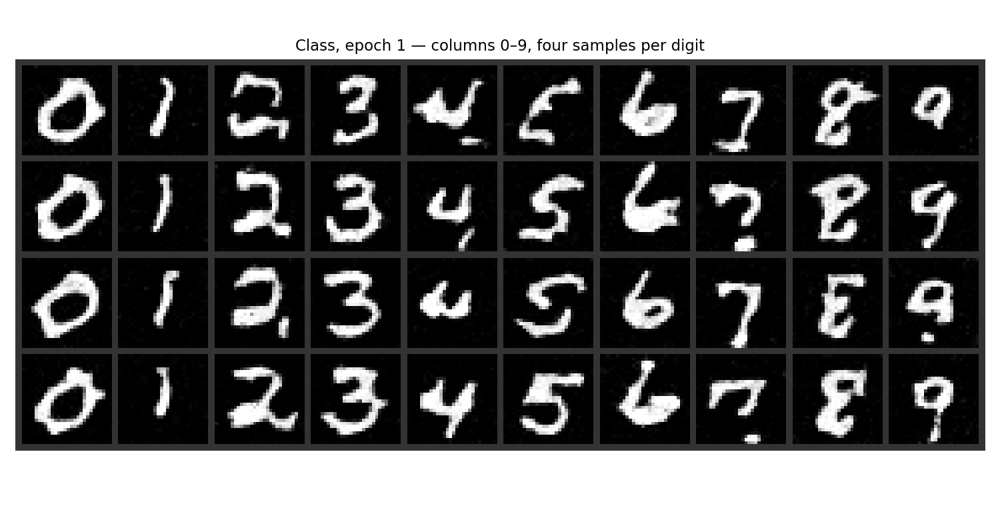
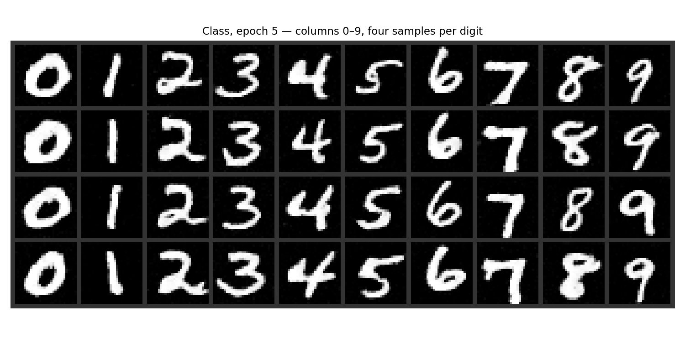
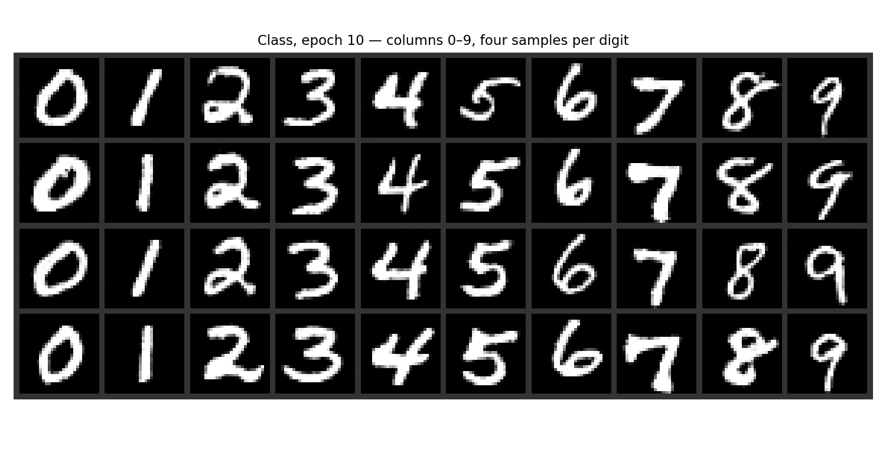
By epoch 10, each column follows its requested digit, while stroke slant, loop size, and thickness vary across the four rows. The epoch-1 grid has incomplete 2s, 5s, and 7s; these are more coherent at epoch 10. The final 5 in the first row remains unusually open. Training velocity MSE decreases from 0.159327 to 0.084185. These are generated samples from fixed noise, not reconstructions of particular training images.
B2.6: Training without a scheduler
A fresh class-conditioned model is trained for ten epochs with constant Adam learning rate 1e-3 and no scheduler. Reducing the constant rate is intended to keep late updates smaller than a fixed 1e-2 rate would. Architecture, training split, class dropout, sampling noise, guidance, and sampling steps match the scheduled experiment. The actual samples must be compared before claiming similar quality.
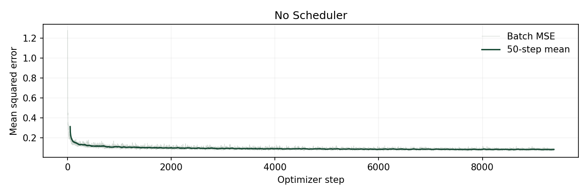
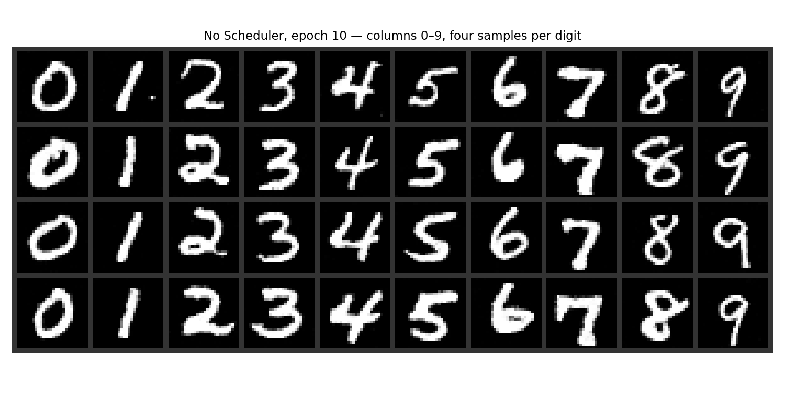
A constant learning rate of 0.001 produces similarly recognizable digits in this fixed comparison grid. Its final training MSE is 0.085105 versus 0.084185 with exponential decay, about 1.1% higher. Several stroke shapes differ, but neither grid is uniformly sharper. I reduced the fixed rate from the scheduled run's initial 0.01 so updates would remain modest late in training. This one-seed visual comparison supports comparable sample quality here, not a general claim that scheduling never helps.
What I learned
A denoiser can reconstruct a noisy digit when the input still carries information about its target. With independent noise and squared-error training, the same architecture instead learns something close to the average digit. Flow matching changes the task by learning a time-dependent direction and following it through many updates.
The pretrained-image experiments show the tradeoff between retaining an input and allowing an edit. Low starting times can completely change the subject; higher times preserve more structure and style. Guidance improves coherence in the paired samples, but the generic prompt still produces a narrow range of subjects. Finally, the building reconstruction demonstrates that sharper-looking detail and lower pixel error do not always select the same result.
Sources and reproducibility
The reported full experiments ran in float32 on a Tesla T4 with PyTorch 2.11.0+cu130. The code uses the supplied PixNerd adapter and its pinned model revisions. Training uses only the MNIST training split; displayed held-out denoising examples come from the test split. Seeds, losses, settings, and run metadata are saved with the figures.
- campanile.jpg: Campanile photograph supplied by the course (source)
- building.jpg: Personal photograph reused from Project 0 / Project 2 (source)
- portrait.jpg: Personal photograph reused from Project 0 / Project 2 (source)
- web.jpg: Tiger face by Amandaines, CC BY-SA 3.0 (source) (license) Center-cropped and resized; shown alongside flow-model edits under the same license.
- drawing_1.png: Original digital sketch created for this project using Pillow
- drawing_2.png: Original digital sketch created for this project using Pillow


Part A assignment and supplied code · Part B assignment and architecture diagrams